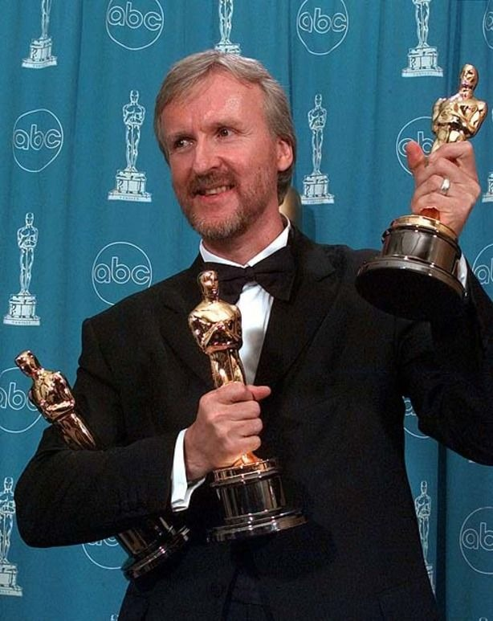

Diretores famosos do cinema
Frequentemente chamado de "autor" ou "maestro", o diretor é o responsável por traduzir as palavras no papel do roteiro em imagens, sons, ritmos e emoções na tela grande. É a figura que unifica todas as pontas de uma história.

Steven Spielberg
Steven Spielberg é considerado um dos maiores diretores da história do cinema. Sua carreira começou na década de 1970 e ele dirigiu diversos sucessos que marcaram gerações, como Jurassic Park (1993). Além de filmes de aventura, também dirigiu obras dramáticas premiadas com o Oscar.

Christopher Nolan
Christopher Nolan é conhecido por criar filmes com histórias complexas e efeitos práticos impressionantes, como Interestelar (2014). Seu trabalho combina ação, emoção e conceitos científicos, tornando-o um dos diretores mais respeitados da atualidade.

Quentin Tarantino
Quentin Tarantino é famoso por seus diálogos marcantes, personagens memoráveis e estilo visual único, como Kill Bill (2003). Seus filmes frequentemente misturam ação, humor e referências à cultura pop.

Martin Scorsese
Martin Scorsese é um dos diretores mais premiados do cinema. Suas obras abordam temas como crime, poder e conflitos humanos, sendo reconhecidas pela excelente direção e atuações. Uma de suas obras é O Lobo de Wall Street (2013)

James Cameron
James Cameron é conhecido por desenvolver tecnologias inovadoras para o cinema. Seus filmes estão entre as maiores bilheterias da história e se destacam pelos efeitos visuais e pela grandiosidade das produções. Ele é diretor da saga Avatar, além de ter feito Titanic (1997) e O Exterminador do Futuro (1984)

Greta Gerwig
Greta Gerwig é diretora, roteirista e atriz. Ela conquistou reconhecimento internacional por dirigir filmes elogiados pela crítica e pelo público, destacando-se por histórias sensíveis e personagens marcantes.